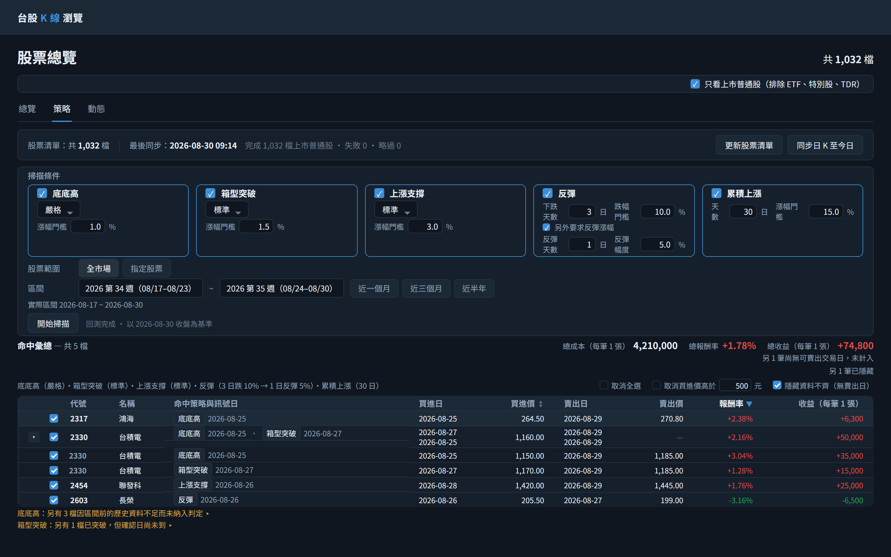
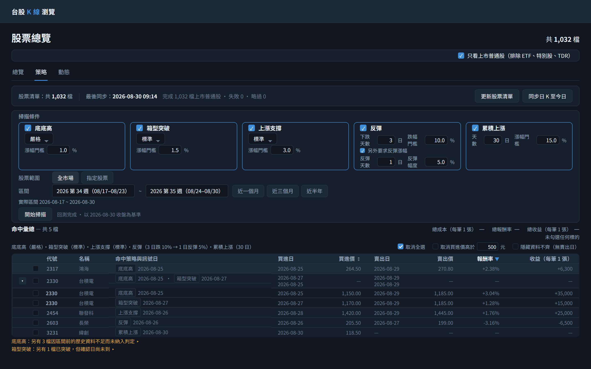
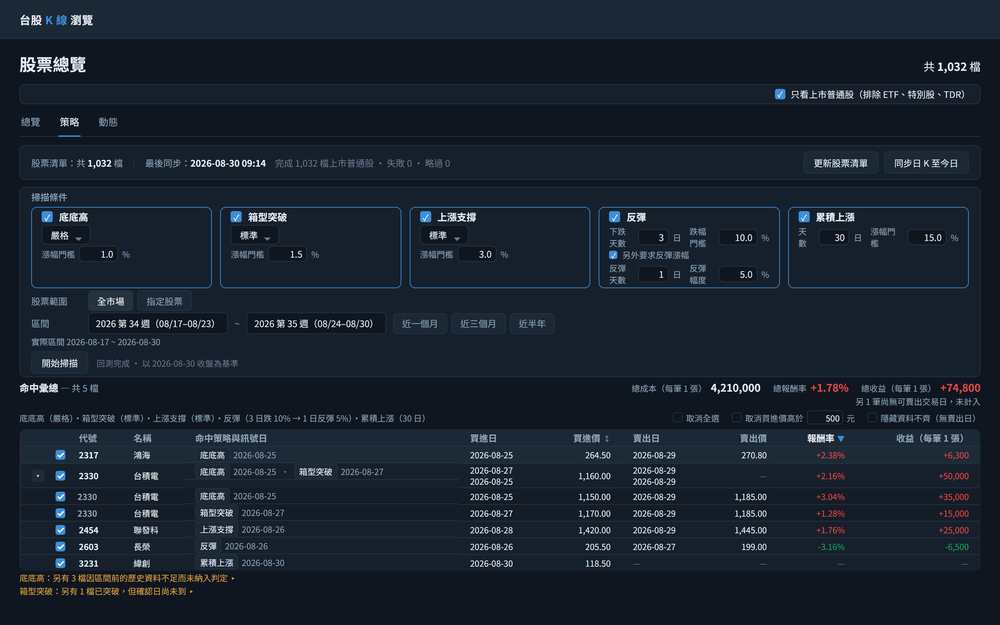
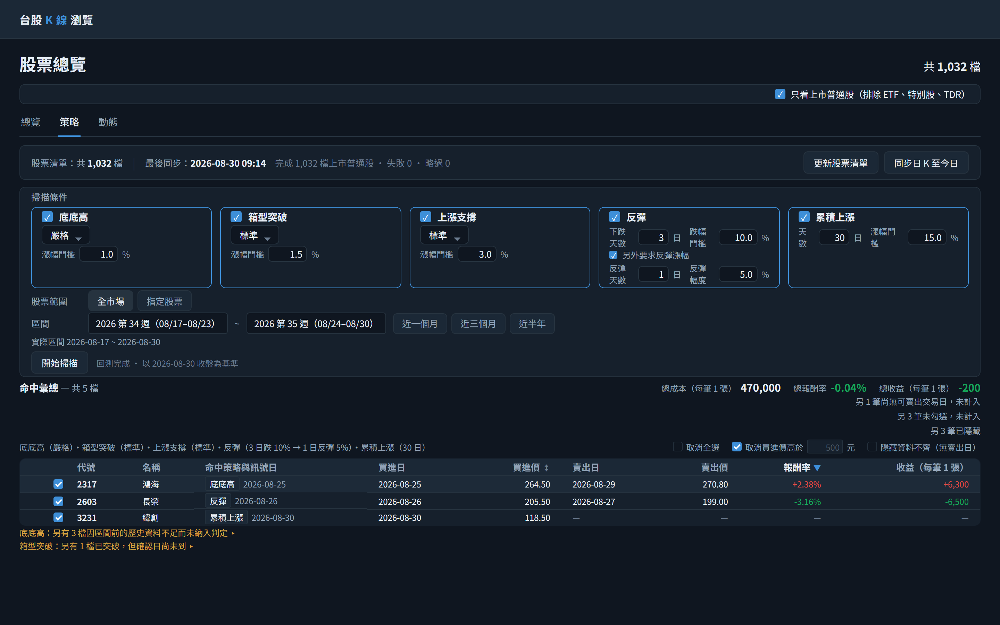
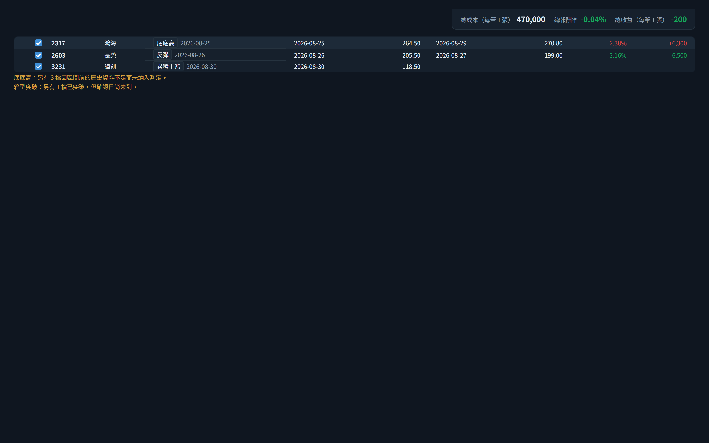

1初始畫面：股票清單只有開發種子的 34 檔，尚未同步。此時直接按同步只會補這 34 檔的行情，掃描範圍也就只有 34 檔——所以第一步是先按「更新股票清單」。策略卡片的形狀取自 API：底底高／箱型突破／上漲支撐有靈敏度下拉，反彈與累積上漲則依 params 畫出輸入格。本頁沒有「回測」按鈕——掃描成功後會自動回測。
GET
/api/strategies取策略清單：三個有靈敏度型態的三段說明文字，以及反彈／累積上漲的 params 與 paramGroupsGET
/api/stocks/sync/progress?jobType=PRICE_BACKFILL取 lastSyncedAt 顯示最後同步時間GET
/api/stocks?page=1&size=1只取 total 顯示「共 34 檔」
2點擊「更新股票清單」：一次動作同時匯入全體上市普通股與交易所官方產業別，摘要顯示「共 1,032 檔（新增 998、更新 34）・產業別 29 類，未分類 17 檔」，常駐檔數同步更新。此步驟只寫股票主檔與產業別，完全不抓行情。
POST
/api/stocks/universe/import無 body；此端點即是向交易所抓取上市股票清單的起點，同時匯入官方產業別，回應的 totalActiveCount／insertedCount／updatedCount／industryCount／uncategorizedStockCount 組成摘要GET
/api/stocks?page=1&size=1匯入完成後重取 total 更新「共 N 檔」
3點擊「同步日 K 至今日」：母體是 1,032 檔上市普通股（沿用頁籤列上方「只看上市普通股」的預設勾選），同步轉為執行中並顯示 18 / 1,032 進度，畫面不被阻塞；此時仍可再按「更新股票清單」，兩顆按鈕互不阻擋。
POST
/api/stocks/sync/backfillbody startDate=2026-01-01, endDate=2026-08-30, catchUp=true, commonStocksOnly=true（取自頁面層級勾選框），不帶 stockIds 代表全市場；此端點即是抓取歷史日 K 的起點，全市場模式逐交易日各向交易所取一次當日全市場快照GET
/api/stocks/sync/progress?jobType=PRICE_BACKFILL每 5 秒輪詢更新進度
4同步完成，最後同步時間更新為 2026-08-30 09:14、完成 1,032 檔上市普通股（摘要說明母體，避免與常駐的「共 N 檔」對不起來）；勾選五個策略。前三張卡片各自選靈敏度、門檻依所選靈敏度帶入預設值後可再自行輸入。反彈與累積上漲沒有靈敏度下拉：反彈填「下跌天數 3 日／跌幅門檻 10%」，並以「另外要求反彈漲幅」勾選框開啟「反彈天數 1 日／反彈幅度 5%」；累積上漲把天數從預設的 20 改成 30 日。此時尚未掃描。 區間以週選擇：預設起始週為上週 2026 第 34 週（08/17–08/23）、結束週為本週 2026 第 35 週（08/24–08/30），這個預設不對應任何快捷鈕，所以三個快捷鈕都不呈選中；區間列下方的「實際區間 2026-08-17 ~ 2026-08-30」說明週換算成的起迄日——起日是起始週的週一，迄日因為結束週就是本週，所以是今日。
GET
/api/stocks/sync/progress?jobType=PRICE_BACKFILL同步完成後重取 lastSyncedAt
5點擊「開始掃描」：結果區只有一張表「命中彙總 — 共 5 檔」，不再依策略拆成多個區塊；同時命中兩個策略的 2330 在同一列逐一列出各策略的訊號日。此時表格**還沒有勾選框**——勾選框只用來決定哪些列計入回測總計，回測前沒有總計可以影響，擺出來只會讓人勾了卻看不到任何變化。標題下那一行是本次五個策略實際採用的參數，取自回應而非畫面上的輸入值——各策略的判定明細欄位隨區塊一併移除，判定依據不在本頁查看。資料不足與待確認改列在表格下方、行首標明策略名稱。命中 5 檔：掃描一完成，前端就**自動送出回測**，不需要再按任何按鈕——命中彙總表先照常出現，「開始掃描」右側顯示「回測中…」，全市場回測算完之前不必陪著等。
POST
/api/strategies/scanbody strategies=[底底高/STRICT/risePercent=1.0, 箱型突破/STANDARD/risePercent=1.5, 上漲支撐/STANDARD/risePercent=3.0, 反彈/dropDays=3/dropPercent=10.0/requireRise=true/riseDays=1/risePercent=5.0（不帶 preset）, 累積上漲/days=30/risePercent=15.0（不帶 preset）], commonStocksOnly=true, startDate=2026-08-17（起始週 2026 第 34 週的週一）, endDate=2026-08-30（結束週為本週，送今日），不帶 stockIds 代表全市場；回應每筆命中另帶 buyDate（進場日：上漲支撐為確認完成日 D+2，其餘型態等於訊號日）POST
/api/strategies/backtest掃描成功且命中 ≥ 1 檔時自動送出，不需按鈕；body items=[{3231, 2026-08-30}, {2330, 2026-08-25}, {2330, 2026-08-27}, {2454, 2026-08-28}, {2603, 2026-08-26}, {2317, 2026-08-25}]，日期為各筆的 buyDate（聯發科命中上漲支撐、起漲日 08-26，買進日為確認完成日 08-28），一檔有幾個相異買進日就送幾筆（台積電送兩筆），落在同一買進日的多筆命中只送一筆；回應的 buyDate／buyPrice／sellDate／sellPrice／returnPercent／profit 依 (stockId, buyDate) 對回各列填入六欄![自動回測完成（不發新請求，第 5 步送出的回測回應抵達）：表格最左出現每列一個勾選框（預設全部勾選），右側補上買進日／買進價／賣出日／賣出價／報酬率／收益六欄，標題右側補上總成本、總報酬率與總收益三個標籤——全部同時出現。總成本 4,210,000 是總報酬率的分母（74,800 ÷ 4,210,000 = +1.78%），涵蓋範圍與另兩個標籤相同：已勾選且可回測的筆，緯創尚無賣出日所以不計入；成本不是漲跌值，不套紅綠色。「買進價」「報酬率」兩個表頭帶「↕」表示可點選排序，此時仍是預設排序（最新訊號日由新到舊）。買進與賣出各自成對出現，報酬率與收益因此在同一列上就可驗算。台積電同時命中底底高（08-25）與箱型突破（08-27）兩個**不同訊號日**，各是一次獨立的買進賣出，該列因此帶展開鈕；摺疊時父列的買進日與賣出日**逐行列出兩筆各自的日期**（由新到舊：08-27→08-29、08-25→08-29，同一行屬於同一筆），買進價為成本加權均價 1,160.00、報酬率 +2.16% 與收益 +50,000 為兩筆合計；日期不能合計，所以逐筆列出，價格可以，所以取合計。賣出價沒有單一值，顯示「—」並與同欄靠右對齊。長榮為負值如實回報、不夾為 0；緯創的買進日就是 2026-08-30，其後還沒有可賣出的交易日，所以被預設勾選的「隱藏資料不齊（無賣出日）」藏起來——它仍是命中，「共 5 檔」照算，總計下方註明「另 1 筆尚無可賣出交易日，未計入」與「另 1 筆已隱藏」。 標題列下方、與採用參數同一列的右側出現等高的三個批次勾選框：「取消全選」此時全部的筆都勾著，所以呈未勾選；「取消買進價高於 [500] 元」回測剛完成時一律未勾選；「隱藏資料不齊（無賣出日）」預設勾選。標題右側只留三個總計。命中彙總表的列不會導向日 K 頁；回測完成後點選一列本身就等同點它的勾選框，排除一檔不必瞄準那個小方塊，游標也因此為手指。 聯發科命中上漲支撐：「命中策略與訊號日」顯示起漲日 08-26，但這個型態要到其後兩個交易日都守住起漲收盤——也就是 08-28 收盤——才確認成立，所以買進日是 08-28、買進價 1,420.00，而不是訊號日；在 08-26 收盤買進等於先偷看了之後兩天的收盤。其餘型態確認成立的那天就是訊號日，買進日與訊號日相同。](step-6.png)
6自動回測完成（不發新請求，第 5 步送出的回測回應抵達）：表格最左出現每列一個勾選框（預設全部勾選），右側補上買進日／買進價／賣出日／賣出價／報酬率／收益六欄，標題右側補上總成本、總報酬率與總收益三個標籤——全部同時出現。總成本 4,210,000 是總報酬率的分母（74,800 ÷ 4,210,000 = +1.78%），涵蓋範圍與另兩個標籤相同：已勾選且可回測的筆，緯創尚無賣出日所以不計入；成本不是漲跌值，不套紅綠色。「買進價」「報酬率」兩個表頭帶「↕」表示可點選排序，此時仍是預設排序（最新訊號日由新到舊）。買進與賣出各自成對出現，報酬率與收益因此在同一列上就可驗算。台積電同時命中底底高（08-25）與箱型突破（08-27）兩個**不同訊號日**，各是一次獨立的買進賣出，該列因此帶展開鈕；摺疊時父列的買進日與賣出日**逐行列出兩筆各自的日期**（由新到舊：08-27→08-29、08-25→08-29，同一行屬於同一筆），買進價為成本加權均價 1,160.00、報酬率 +2.16% 與收益 +50,000 為兩筆合計；日期不能合計，所以逐筆列出，價格可以，所以取合計。賣出價沒有單一值，顯示「—」並與同欄靠右對齊。長榮為負值如實回報、不夾為 0；緯創的買進日就是 2026-08-30，其後還沒有可賣出的交易日，所以被預設勾選的「隱藏資料不齊（無賣出日）」藏起來——它仍是命中，「共 5 檔」照算，總計下方註明「另 1 筆尚無可賣出交易日，未計入」與「另 1 筆已隱藏」。 標題列下方、與採用參數同一列的右側出現等高的三個批次勾選框：「取消全選」此時全部的筆都勾著，所以呈未勾選；「取消買進價高於 [500] 元」回測剛完成時一律未勾選；「隱藏資料不齊（無賣出日）」預設勾選。標題右側只留三個總計。命中彙總表的列不會導向日 K 頁；回測完成後點選一列本身就等同點它的勾選框，排除一檔不必瞄準那個小方塊，游標也因此為手指。 聯發科命中上漲支撐：「命中策略與訊號日」顯示起漲日 08-26，但這個型態要到其後兩個交易日都守住起漲收盤——也就是 08-28 收盤——才確認成立，所以買進日是 08-28、買進價 1,420.00，而不是訊號日；在 08-26 收盤買進等於先偷看了之後兩天的收盤。其餘型態確認成立的那天就是訊號日，買進日與訊號日相同。

7點擊「報酬率」表頭：表格依畫面上顯示的報酬率降冪重排——鴻海 +2.38%、台積電 +2.16%（一檔多筆的父列以它顯示的成本加權合計排序）、聯發科 +1.76%、長榮 -3.16%；緯創的報酬率是「—」、視為最小值，但它此時被隱藏，不在表上。表頭顯示「▼」，再點一次改為升冪（「—」排最前），第三次還原預設排序。回測完成本身不會自動重排，要依報酬率看是使用者自己點出來的，而且隨時點得回去。排序純前端，勾選、展開與三個總計都不變。

8點擊台積電那一列的展開鈕：兩個買進日各展開成一個子列，並依目前的報酬率降冪排在父列內（08-25 在前、08-27 在後；父列逐行列出的日期仍依買進日由新到舊），各有自己的買進日／買進價／賣出日／賣出價與自己的勾選框——08-25 那筆買在 1,150.00、報酬率 +3.04%，08-27 那筆買在 1,170.00、報酬率 +1.28%；兩筆的賣出日同為 08-29、賣出價同為 1,185.00，報酬率不同純粹是買進成本不同。父列的 +2.16% 與 +50,000 是這兩筆的成本加權合計（50,000 ÷ 2,320,000），與標題總計用的是同一套算法——差別只在涵蓋範圍是一檔還是全部。展開純屬前端，不重打端點；標題的「共 5 檔」不受影響——一檔有兩個訊號日仍然只算一檔。

9點選台積電 08-27 那一列子列（等同點它的勾選框）：該子列整列反灰但自己的數字照常顯示，父列的勾選框轉為**半選**（與已勾選在視覺上可分辨），父列合計即時重算為只含 08-25 那筆——買進價 1,150.00、+3.04% / +35,000。此時台積電的 +3.04% 已高於排在它上面的鴻海 +2.38%，但**列的位置不動**：排序只在點表頭那一刻依當時的值決定，逐列排除時列不會從手下跳走，要依新值重排就再點一次表頭。父列逐行日期中 08-27 那一行隨之轉為弱化色，但仍列出，因為它描述的是這檔有過哪幾次進出場。標題三個總計同步重算為總成本 3,040,000、+1.97% / +59,800（少掉的 1,170,000 正是 08-27 那筆的成本），並多一行「另 1 筆未勾選，未計入」，與既有的「尚無可賣出交易日」分開陳述：一個是系統算不出來，一個是使用者自己排除的。兩行數的都是筆數而非檔數。整個切換完全在前端完成，不重新呼叫回測端點。 此時仍有筆勾著，「取消全選」維持未勾選——它回答的是「是不是全部都取消了」這個是非題，部分勾選不呈半選。

10勾選標題右側的「取消全選」：表上每一筆的勾選框一次全部取消——單訊號列、台積電兩個子列都取消，父列轉為未勾選、合計顯示「—」、逐行日期全部轉為弱化色，整張表反灰但各列自己的數字照常顯示。三個總計（含總成本）顯示弱化的「—」而不是 0%／0，排序照舊停在「報酬率 ▼」、列的位置不變，下方說明為「未勾選任何標的」（勾回任何一筆就會有數字，與「沒有可回測的標的」是兩回事）。「取消全選」的勾選狀態是從各筆推導的：再取消勾選它，全部的筆就一次勾回；逐列手動取消到一筆不剩時，它也會自己變成勾選。整個切換完全在前端完成，不重新呼叫回測端點。 「取消全選」同時把所有隱藏的筆顯示回來：原本藏著的緯創重新出現，「隱藏資料不齊（無賣出日）」隨之變為未勾選。「取消買進價高於 500 元」不會因為高價的筆都沒勾而自己變成勾選——它記的是「是否正在隱藏」。

11取消勾選「取消全選」：每一筆一次全部勾回，三個總計回到 4,210,000 / +1.78% / +74,800，此時沒有任何被隱藏的筆，兩個隱藏框維持未勾選，緯創照常顯示。

12勾選「取消買進價高於 500 元」：買進價高於 500 的三筆——台積電 08-25（1,150.00）、08-27（1,170.00）與聯發科（1,420.00）——一次取消勾選並從表上隱藏。逐筆判斷而非看父列均價；台積電兩筆都在範圍內，整檔不再出現。其餘三檔完全不動，緯創雖然無法回測，買進價 118.50 不在範圍內，所以仍顯示。三個總計重算為 470,000 / -0.04% / -200，並多兩行「另 3 筆未勾選，未計入」「另 3 筆已隱藏」——「共 5 檔」不變。門檻不含等於，所以寫「高於」不寫「以上」；勾著時金額輸入框 disabled，要換門檻得先取消勾選（勾回並重新顯示）再改。仍有筆勾著，「取消全選」維持未勾選。整個切換完全在前端完成。

13往下捲動：標題列、三個批次勾選框與「未計入」「已隱藏」說明隨頁面捲走，只有三個總計（總成本 470,000、總報酬率 -0.04%、總收益 -200）浮在畫面頂端、對齊結果區右緣跟隨。浮動的數字與原位那份是同一份，捲動中勾選任何一列都即時更新；捲回原位時浮動那份消失，畫面上永遠只看得到一份，整張命中表捲過之後也一併消失。捲動純屬呈現，不發請求。